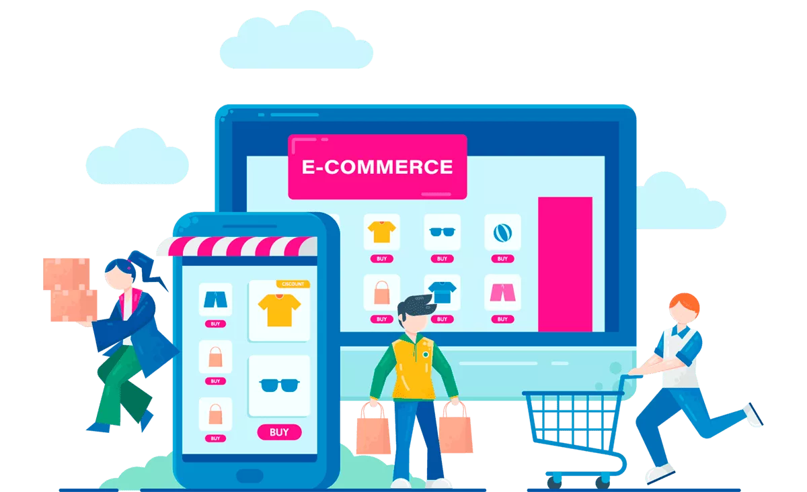

Tecnologías Emergentes en el Comercio Electrónico
El comercio electrónico está experimentando una revolución gracias a las tecnologías emergentes. Estas innovaciones están transformando la forma en que compramos y vendemos en línea. A continuación, exploraremos algunas de estas tecnologías y cómo están impactando el comercio electrónico:
Tecnología de Inteligencia Artificial (IA)
La IA se utiliza en el comercio electrónico para personalizar recomendaciones de productos, chatbots de atención al cliente, y análisis de datos para comprender mejor el comportamiento del consumidor. Esto mejora la experiencia del usuario y aumenta las tasas de conversión.
Realidad Virtual (RV) y Realidad Aumentada (RA)
La RV y la RA permiten a los clientes experimentar productos de manera virtual antes de comprarlos. Por ejemplo, los minoristas de muebles pueden ofrecer a los clientes la posibilidad de ver cómo se verá un sofá en su sala de estar antes de comprarlo.
Blockchain
La tecnología blockchain se utiliza para garantizar la seguridad y la transparencia en las transacciones en línea. Permite la trazabilidad de productos, lo que es esencial para la autenticidad de los productos de lujo y la cadena de suministro.
Internet de las Cosas (IoT)
Los dispositivos IoT están conectados a Internet y pueden proporcionar datos en tiempo real. En el comercio electrónico, esto se utiliza para el seguimiento de inventario en tiempo real y la entrega programada, mejorando la eficiencia logística.